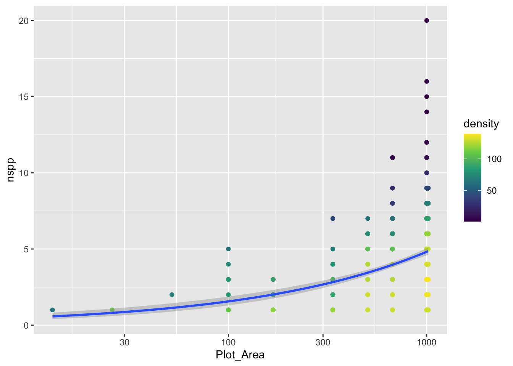
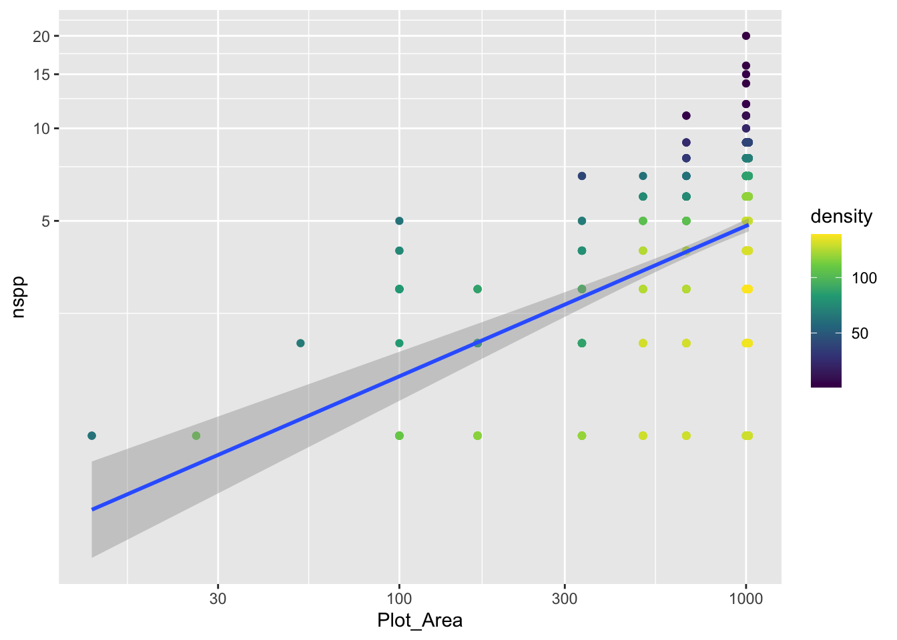
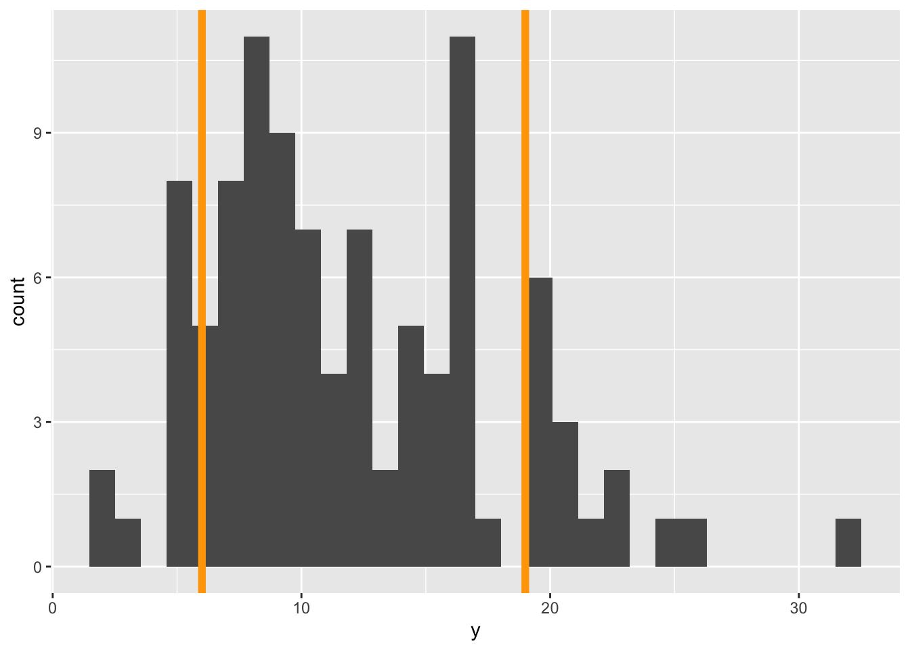
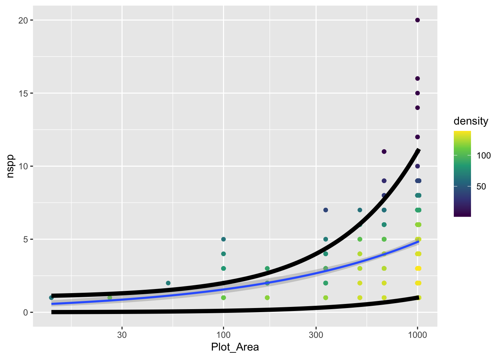
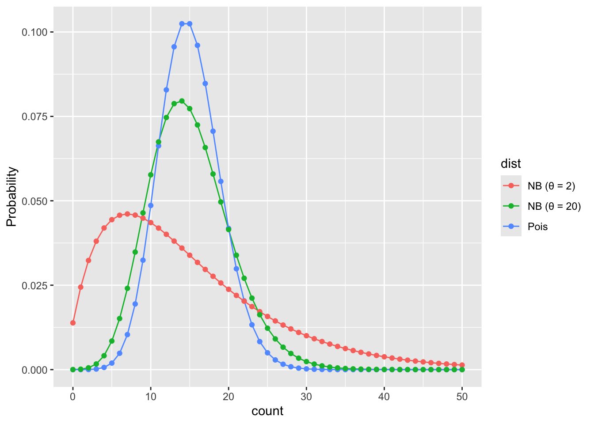

# read-in data
tree <- read.csv("https://raw.githubusercontent.com/uhm-biostats/stat-mod/refs/heads/main/data/OpenNahele_Tree_Data.csv")
clim <- read.csv("https://raw.githubusercontent.com/uhm-biostats/stat-mod/refs/heads/main/data/plot_climate.csv")
hii_geo <- read.csv("https://raw.githubusercontent.com/uhm-biostats/stat-mod/refs/heads/main/data/hii_geo.csv")23 Overdispersion and the Negative Binomial GLM
This lab will guide you through dealing with “overdispersion,” a common challenge with ecological data. You can download the template .qmd file for this lab here:
The template will prompt you to work through the following sections.
23.1 Picking up where we left off
We can now fit Poisson GLMs! Let’s re-make our simple model for species richness as a function of plot area (i.e. the species area relationship; SAR). First, we again need to read-in and prepare the data. Here is the read-in
Now work through the steps of joining the three data sets and executing the split-apply-combine workflow to arrive at a data object (same as we had before) called dat_plt that has rows for survey plots and columns for all the plot-level variables as well as nspp.
You’ll have some extra work here. Hopefully you noticed this message when loading the MASS package
The following object is masked from 'package:dplyr':
selectThat means R will be confused if we try to use select in a dplyr way. To help R understand your code, if you want to use dplyr’s select you’ll need to be explicit like this: dplyr::select.
Here are the data prep steps
# join all data ***at tree level*** (i.e. rows = trees)
# remember, if you use `select` in this workflow, you'll
# need to clarify `dplyr::select`
# split-apply-combine
# remove super large plots (as final step in split-apply-combine)Once you have dat_plt made, you can again make a GLM of nspp ~ log(Plot_Area)
sar <- glm(nspp ~ log(Plot_Area), data = dat_plt, family = poisson)Let’s also plot the data with the model
gp_sar <- ggplot(dat_plt, aes(Plot_Area, nspp)) +
geom_pointdensity() +
scale_color_viridis_c() +
scale_x_log10() +
geom_smooth(method = "glm", method.args = list(family = poisson))
gp_sar`geom_smooth()` using formula = 'y ~ x'
Notice we did not log the y-axis, if we had with the scale_y_log10() approach, ggplot would have had an issue internally trying to apply the glm function. We can still log the y-axis, we just have to be more careful and use coord_transform which modifies the plot after all geom_*s have been computed.
gp_sar + coord_transform(y = "log10")`geom_smooth()` using formula = 'y ~ x'
Notice that there is a confidence envelope around the trend line of the model. This confidence envelope tells us, roughly, where 95% of trend lines would fall. It does not tell us where 95% of the data should fall.
It’s worth thinking about, and visualizing, how the model expects the data to be distributed. Remember, a Poisson distribution assumes that the variance of the data will be equal to the mean. As the mean increases, so too will the variance.
The spread of the nspp data does increase from left to right as the mean (the trend line) increases. But does it increase exactly proportional to the mean?
23.2 Evaluating the Poisson assumption of variance = mean
We have a good number of data points for survey plots with area of 1,000 m\(^2\). Let’s use specifically those data to see if their mean equals their variance. Here are the steps:
filterthe data so we have only rows wherePlot_Area == 1000- with those filtered data, calculate the mean (funciton
mean) and variance (functionvar) - compare: are the mean and variance at all close to the same number?
Spoiler alert: the answer is no (but prove that to yourself). So the constraint of the Poisson distribution is not met by our data.
We can also visualize this discrepancy between Poisson and our data. Before we visualize the discrepancy with our real data, let’s motivate what we’ll do. Imagine we had some response data y for one fixed value of the predictor(s) (like we just did when subsetting the real data to only cases where Plot_Area == 1000). Let’s makeup some data for y that will not have variance = mean
sim_dat <- data.frame(y = rnbinom(100, mu = 12, size = 8),
x = 3)We are using the negative binomial distribution, not Poisson, to simulate data so indeed, the mean and variance are not equal
mean(sim_dat$y)[1] 11.89var(sim_dat$y)[1] 34.2403Now let’s look at a histogram of the data and add some visual guides for where 95% of a Poisson distribution would fall
ybar <- mean(sim_dat$y)
gp_sim <- ggplot(sim_dat, aes(y)) +
geom_histogram() +
geom_vline(xintercept = qpois(c(0.025, 0.975), lambda = ybar),
color = "orange", size = 2)Warning: Using `size` aesthetic for lines was deprecated in ggplot2 3.4.0.
ℹ Please use `linewidth` instead.gp_sim`stat_bin()` using `bins = 30`. Pick better value `binwidth`.
The orange lines represent where we expect 95% of the data to fall. Notice, we got those lines using the qpois function which tells us where we need to cut the probability distribution to get, in this case, 0.025 and 0.975 cumulative probability (i.e. area of the PMF).
Visually we can see that more of the data fall outside those 95% guides than should if a Poisson distribution was the right choice.
Our goal with the real data will be to add these 95% guides but as something like trend lines themselves. The visualization we’re going for will look something like this:
gp_sar +
# coord_transform(y = "log10") +
geom_function(fun = function(x) {
0.001 * x
},
size = 2) +
geom_function(fun = function(x) {
1 + 0.01 * x
},
size = 2)`geom_smooth()` using formula = 'y ~ x'
The challenge is to replace the function that currently looks like
function(x) {
1 + 0.01 * x
}with a function that actually uses qpois to calculate these curves. To do so, remember this: the mean lambda that we need to plug into qpois is given by link function and coefficients of our GLM.
Once you’ve added the actual curves denoting where 95% of the data should fall (assuming a Poisson distribution), does it actually look like 95% of the data fall within those curves?
23.3 The Poisson vs. the negative binomial
Given that our data do not conform to the strict constraints of the Poisson distribution, what are we to do? Turns out, we are in good company, this is a common problem with ecological data. The problem is called overdispersion and means that we have more variance than is expected by the Poisson model. There are many possible fixes, but a common one is to use the negative binomial distribution (that we already hinted at) instead of the Poisson.
The MASS package let’s us fit a GLM with a negative binomial distribution. But before we get there, let’s recap what the negative binomial (NB) distribution is.
The NB distribution also models counts. It can also be parameterized by a mean value like the Poisson (though unfortunately the mean for the NB is typically called \(\mu\)). But the NB adds a parameter, sometimes called \(\theta\) or size. This added parameter allows the variance to be greater than the mean according to the relationship:
\[ \text{Var(counts)} = \mu + \frac{\mu^2}{\theta} \]
The extra term \(\mu^2 / \theta\) is the excess variance beyond what Poisson allows. When \(\theta\) is large, \(\mu^2/\theta \approx 0\) and the NB collapses back to the Poisson. When \(\theta\) is small, there is a lot of extra variance.
Let’s visualize Poisson and NB PMFs for the same mean so we can see what overdispersion looks like.
# shared mean
mu <- 15
# range of possible counts
k <- 0:50
# poisson PMF
pois_pmf <- dpois(k, lambda = mu)
# NB PMF with a different thetas
theta_small <- 2
theta_large <- 20
nb_pmf_small <- dnbinom(k, mu = mu, size = theta_small)
nb_pmf_large <- dnbinom(k, mu = mu, size = theta_large)
# combine into one data frame for plotting
pmf_dat <- data.frame(
k = rep(k, 3),
prob = c(pois_pmf, nb_pmf_small, nb_pmf_large),
dist = rep(c("Pois",
paste0("NB (θ = ", theta_small, ")"),
paste0("NB (θ = ", theta_large, ")")),
each = length(k))
)
ggplot(pmf_dat, aes(k, prob, color = dist)) +
geom_line() +
geom_point() +
xlab("count") +
ylab("Probability")
Feel free to improve these colors!
What we see is that when \(\theta\) is small the NB puts more probability on values far from the mean than the Poisson would predict. When \(\theta\) is large the NB is closer to the Poisson.
23.4 Fitting a negative binomial GLM
Now that we’ve seen the data are overdispersed, let’s figure out how to fit a negative binomial GLM. The switch to an NB GLM is made quite easy thanks to the MASS package. With the glm.nb function in MASS we use the same formula as with Poisson GLM (nspp ~ log(Plot_Area)), and indicate the data source (data = dat_plt), but plug those into the glm.nb instead of glm(..., family = poisson). The glm.nb function does not need a family specification because it only works with one family, the negative binomial family.
sar_nb <- glm.nb(nspp ~ log(Plot_Area), data = dat_plt)
# have a look at the intercept and slope
coefficients(sar_nb) (Intercept) log(Plot_Area)
-1.7585322 0.4817235 23.4.1 Under the hood of a negative binomial GLM
Just like with Poisson GLM, NB GLM uses a log link function to connect the mean (\(\mu\)) of the NB to the explanatory variables of interest
\[ \log(\mu) = b_0 + b_1 x \]
Then we input the mean \(\mu\) into the NB to model the data themselves
\[ Y \sim NB(\mu, ~\theta) \]
But you’ll notice the additional parameter \(\theta\); remember, this parameter is how we allow for overdispersion. The coefficients function did not tell us about \(\theta\), but that is not because glm.nb ignored \(\theta\), it is just because \(\theta\) is assumed to not vary with the data. Rather MASS sees \(\theta\) as a property of the negative binomial family. To see the estimate for \(\theta\) we use the family function
family(sar_nb)
Family: Negative Binomial(9.0148)
Link function: log We see that the estimate for \(\theta\) is about 9.
23.4.2 Negative binomial GLM with additional explanatory variables
In the previous lab you made a model with additional explanatory variables (after checking for collinearity). Make that same model now, but with glm.nb.
23.4.3 Comparing coefficients and likelihoods between models
Now compare the coefficients of your Poisson and NB models. How are the estimates different?
Next, compare the log likelhoods of each model. You can do that with the logLik function like this (using the species area models as an example)
logLik(sar)'log Lik.' -1185.718 (df=2)logLik(sar_nb)'log Lik.' -1162.635 (df=3)The log likelihood of the NB model is larger (i.e. less negative). What does that mean? Do you find the same pattern (NB model has larger log likelihood) for your model with additional explanatory variables?